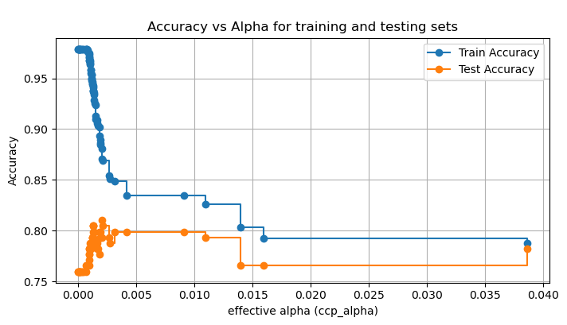

17장 의사결정 트리 모형#
1. 데이터 입력#

출처: 데이터세트는 Kaggle에서 주최한 머신러닝 대회 “Titanic - Machine Learning from Disaster”에서 제공한 것을 사용한다.
Gemini 설명#
titanic_train.csv 파일은 총 891명의 승객 정보와 12개의 컬럼으로 구성되어 있다.
변수 설명#
변수명 |
설명 |
데이터 타입 |
비고 |
|---|---|---|---|
|
승객 고유 ID |
Integer |
단순 식별자 |
|
생존 여부 |
Integer |
0 = 사망, 1 = 생존 (타겟 변수) |
|
객실 등급 |
Integer |
1 = 1등석, 2 = 2등석, 3 = 3등석 |
|
승객 이름 |
String |
|
|
성별 |
String |
male, female |
|
나이 |
Float |
177개의 결측치 존재 |
|
동승한 형제자매 및 배우자 수 |
Integer |
|
|
동승한 부모 및 자녀 수 |
Integer |
|
|
티켓 번호 |
String |
|
|
요금 |
Float |
|
|
객실 번호 |
String |
687개의 결측치 존재 (데이터의 약 77%가 결측) |
|
탑승 항구 |
String |
C = 셰르부르, Q = 퀸스타운, S = 사우스햄튼 (2개의 결측치 존재) |
데이터셋 특징#
결측치(Missing Values):
Cabin변수는 687개의 결측치를 가지고 있어 대부분의 데이터가 비어 있다.Age변수는 177개의 결측치가 있으며, 이를 처리하는 것이 분석에서 중요하다.Embarked변수는 2개의 결측치가 있다.
데이터 타입:
Age와Fare는 실수형(Float)이다.Name,Sex,Ticket,Cabin,Embarked는 문자열(Object) 데이터이다.나머지는 정수형(Integer)이다.
생존율:
전체 891명 중 약 38.4%가 생존(
Survived=1)하였다.
기초 통계량(describe)#
|
|
|
|
|
|
|
|
|---|---|---|---|---|---|---|---|
count |
891.000000 |
891.000000 |
891.000000 |
714.000000 |
891.000000 |
891.000000 |
891.000000 |
mean |
446.000000 |
0.383838 |
2.308642 |
29.699118 |
0.523008 |
0.381594 |
32.204208 |
std |
257.353842 |
0.486592 |
0.836071 |
14.526497 |
1.102743 |
0.806057 |
49.693429 |
min |
1.000000 |
0.000000 |
1.000000 |
0.420000 |
0.000000 |
0.000000 |
0.000000 |
25% |
223.500000 |
0.000000 |
2.000000 |
20.125000 |
0.000000 |
0.000000 |
7.910400 |
50% |
446.000000 |
0.000000 |
3.000000 |
28.000000 |
0.000000 |
0.000000 |
14.454200 |
75% |
668.500000 |
1.000000 |
3.000000 |
38.000000 |
1.000000 |
0.000000 |
31.000000 |
max |
891.000000 |
1.000000 |
3.000000 |
80.000000 |
8.000000 |
6.000000 |
512.329200 |
2. 트리 모델에 의한 생존 분류#
Gemini 분석#
의사결정 나무 모델 소개#

의사결정 나무(Decision Tree)는 데이터가 가진 특징을 바탕으로 ‘스무고개’ 놀이를 하듯 예/아니오 질문을 이어가며 정답(타겟)을 찾아가는 모델이다. 직관적이고 해석하기 쉬워 널리 사용된다.
핵심 개념#
이 모델은 데이터를 가장 잘 구분할 수 있는 질문을 찾아 나무 모양의 규칙을 만든다.
노드 (Node): 질문이나 결과가 담긴 상자.
루트 노드 (Root Node): 맨 꼭대기에 있는 첫 번째 질문. 가장 중요한 변수가 여기 배치된다.
내부 노드 (Internal Node): 중간에 위치한 질문들.
리프 노드 (Leaf Node): 더 이상 질문하지 않고 최종 결정을 내리는 끝 부분.
엣지 (Edge): 노드와 노드를 연결하는 선. 질문에 대한 대답(True/False)에 따라 갈라진다.
불순도 (Impurity): 질문을 던졌을 때 정답과 오답이 얼마나 섞여 있는지를 나타내는 지표(주로 Gini 계수나 엔트로피 사용). 모델은 불순도가 낮아지는(순수해지는) 방향으로 질문을 만든다.
타이타닉 생존 예측 모델링#
타이타닉 데이터를 이용해 생존자(Survived)를 분류하는 의사결정 나무를 만든다. 해석을 위해 트리의 깊이(max_depth)는 3으로 제한한다.
전처리 내용:
Sex: 문자열을 숫자로 변환 (male=0, female=1).Age: 결측치를 중앙값으로 채움.Embarked: 분석 단순화를 위해 제외 (또는 숫자로 변환 가능하나 여기선 주요 변수 집중).사용 변수:
Pclass,Sex,Age,SibSp,Parch,Fare.
1. 추정 결과 해석 (트리 그림 설명)#

위의 의사결정 나무 그림은 타이타닉 승객의 생존 여부를 어떻게 예측하는지 시각적으로 보여준다. 각 박스(노드)는 다음과 같은 정보를 담고 있다.
상단의 조건식: 데이터를 나누는 기준 질문 (예:
Sex <= 0.5).gini: 불순도 (0이면 완벽하게 분류됨, 0.5에 가까우면 섞여 있음).
samples: 해당 노드에 도달한 승객 수.
value: [사망자 수, 생존자 수].
class: 예측 결과 (사망(Dead) 또는 생존(Survived)).
1.1 루트 노드 (가장 중요한 질문)#
가장 꼭대기에 있는 질문은 Sex <= 0.5이다.
해석:
Sex변수는 0(male)과 1(female)로 인코딩되었다.0.5 이하는 남성, 0.5 초과는 여성이다.
즉, 생존에 가장 큰 영향을 미치는 변수는 성별(
Sex) 이다.
결과: 남성은 왼쪽 가지(Edge)로, 여성은 오른쪽 가지(Edge)로 이동한다.
1.2 왼쪽 가지 (남성 그룹)#
첫 번째 분기: 남성 중에서도
Age <= 6.5(6.5세 이하)인 어린아이인지 묻는다.Yes (아이): 생존 가능성이 높아진다 (오른쪽 가지).
No (어른):
Pclass(객실 등급)이나Fare(요금) 등을 따지지만, 대체로 사망 확률이 높다.
특이점: 남성이더라도 아주 어린 아이들은 “여성과 아이 먼저”라는 원칙에 따라 생존 확률이 높게 나타난다.
1.3 오른쪽 가지 (여성 그룹)#
첫 번째 분기: 여성 중에서도
Pclass <= 2.5(1, 2등석인지 3등석인지)를 묻는다.Yes (1, 2등석): 생존 확률이 매우 높다. (대부분 생존).
No (3등석):
Fare(요금)이나Age(나이)에 따라 생존율이 갈린다.
특이점: 여성은 기본적으로 생존율이 높지만, 3등석 여성은 상대적으로 생존율이 낮아진다.
2. 주요 변수 중요도#
트리 모델이 학습 과정에서 어떤 변수를 중요하게 생각했는지 수치로 확인할 수 있다.
변수 |
중요도 (Feature Importance) |
비고 |
|---|---|---|
|
가장 높음 |
생존 여부를 가르는 결정적 요인 |
|
높음 |
사회적 지위가 생존에 영향 |
|
중간 |
특히 남성 중 어린아이를 구별하는 데 중요 |
|
중간 |
|
3. 요약#
이 모델은 타이타닉 데이터에서 “여성 우선, 아이 우선, 그리고 부자(높은 등급 객실) 우선” 이라는 규칙을 스스로 학습해냈다. 복잡한 수식 없이 “스무고개” 질문만으로도 데이터의 핵심 패턴을 파악할 수 있다는 것이 의사결정 나무의 가장 큰 장점이다. 하지만 너무 깊게 학습하면(과적합) 새로운 데이터에는 맞지 않을 수 있어 가지치기(Pruning)가 필요하다.
3. 분류 성과#
Gemini 분석#
타이타닉 생존자 예측 모델(최대 깊이 3)의 성능을 테스트 데이터(전체 데이터의 20%)를 사용하여 평가하였다.
1. 혼동 행렬 (Confusion Matrix) 분석#
혼동 행렬은 모델이 실제값(Actual)과 예측값(Predicted)을 어떻게 분류했는지 보여준다.

예측: 사망 (0) |
예측: 생존 (1) |
합계 |
|
|---|---|---|---|
실제: 사망 (0) |
92 (True Negative) |
13 (False Positive) |
105 |
실제: 생존 (1) |
23 (False Negative) |
51 (True Positive) |
74 |
합계 |
115 |
64 |
179 |
정확하게 예측한 경우:
사망자를 사망자로 예측: 92명
생존자를 생존자로 예측: 51명
잘못 예측한 경우:
사망자를 생존자로 잘못 예측 (1종 오류): 13명
생존자를 사망자로 잘못 예측 (2종 오류): 23명
2. 주요 성능 지표 (Performance Metrics)#
지표 (Metric) |
값 (Value) |
설명 |
|---|---|---|
정확도 (Accuracy) |
0.80 |
전체 예측 중 맞춘 비율이다. 약 80%의 확률로 생존 여부를 정확히 맞추었다. |
정밀도 (Precision) |
0.80 (생존자 기준) |
모델이 ‘생존’이라고 예측한 사람 중 실제 생존자의 비율이다. (51 / 64) |
재현율 (Recall) |
0.69 (생존자 기준) |
실제 생존자 중에서 모델이 ‘생존’이라고 맞춘 비율이다. (51 / 74) |
F1 점수 (F1-score) |
0.74 |
정밀도와 재현율의 조화 평균이다. 데이터 불균형을 고려한 종합적인 성능 지표이다. |
해석:
사망자 예측 능력(Recall 0.88)이 생존자 예측 능력(Recall 0.69)보다 뛰어나다. 즉, 모델은 사망할 사람을 더 잘 찾아낸다. 이는 사망자 데이터가 더 많거나(다수 클래스), 사망하는 패턴이 더 명확하기 때문일 수 있다.
생존자를 놓치는 경우(False Negative, 23명)가 사망자로 오인하는 경우(False Positive, 13명)보다 많다.
3. ROC 곡선 및 AUC (Area Under Curve)#

ROC 곡선: 주황색 선이 왼쪽 위 모서리에 가까울수록 좋은 모델이다. 점선(무작위 추측)보다 위에 있으므로 의미 있는 예측을 하고 있다.
AUC 값: 0.82 (그래프 참조).
AUC는 0.5(무작위)에서 1.0(완벽함) 사이의 값을 가진다.
0.8 이상이면 일반적으로 우수한 성능의 모델로 평가된다.
종합 평가#
이 모델은 간단한 규칙(깊이 3)만으로도 약 80%의 정확도와 0.82의 AUC를 달성하여 준수한 예측 성능을 보인다. 다만, 실제 생존자를 찾아내는 비율(재현율)이 약 69%로 다소 낮으므로, 생존자를 더 잘 찾기 위해서는 모델의 복잡도를 높이거나(깊이 증가), 다른 변수를 추가하는 등의 개선이 필요할 수 있다.
4. 가지치기#
Gemini 분석#
가지치기 (Pruning) 란?#
가지치기(Pruning) 는 의사결정 나무(Decision Tree)가 과적합(Overfitting)되는 것을 방지하기 위해 불필요한 가지를 제거하는 기법이다. 트리가 너무 복잡해지면 학습 데이터에만 지나치게 맞춰져(Overfitting), 새로운 데이터에 대한 예측 성능이 떨어지는 문제가 발생한다. 이를 해결하기 위해 트리의 크기를 줄이거나 가지를 쳐내어 일반화(Generalization) 성능을 높이는 것이다.
가지치기의 종류#
사전 가지치기 (Pre-pruning)
트리를 생성하는 과정에서 특정 조건(제약)을 만족하지 않으면 더 이상 분할하지 않고 멈추는 방법이다.
주로
max_depth(최대 깊이),min_samples_split(분할을 위한 최소 샘플 수),min_samples_leaf(리프 노드가 되기 위한 최소 샘플 수) 등의 하이퍼파라미터를 설정하여 수행한다.장점: 학습 시간이 빠르고 구현이 쉽다.
단점: 중요한 패턴을 놓칠 수 있다(Underfitting 가능성).
사후 가지치기 (Post-pruning)
일단 트리를 최대한 깊게 학습시킨(Overfitting 상태) 후, 성능에 기여하지 않는 가지를 제거하는 방법이다.
비용 복잡도 가지치기 (Cost Complexity Pruning) 가 대표적이며,
ccp_alpha라는 파라미터를 사용하여 트리의 복잡도와 불순도 감소량 사이의 균형을 맞춘다.
타이타닉 데이터 예시 (사후 가지치기 적용)#

위 그래프는 타이타닉 데이터에 비용 복잡도 가지치기(Cost Complexity Pruning) 를 적용한 결과이다.
1. 과적합된 모델 (Full Tree)#
깊이 (Depth): 23 (매우 복잡함)
학습 정확도 (Train Acc): 97.89% (거의 완벽하게 외움)
테스트 정확도 (Test Acc): 75.98% (새로운 데이터에는 약함)
해석: 트리가 너무 깊고 복잡하여 학습 데이터의 노이즈까지 학습했기 때문에, 실제 예측 성능은 떨어진다.
2. 가지치기 수행 과정 (Alpha 값 조정)#
ccp_alpha값을 0부터 점차 증가시키면서(가지치기 강도를 높이면서) 트리의 정확도 변화를 관찰하였다.

그래프 해석 (Accuracy vs Alpha):
ccp_alpha가 0일 때(왼쪽 끝), 학습 정확도(파란 선)는 가장 높지만 테스트 정확도(주황 선)는 낮다.ccp_alpha가 증가함에 따라(오른쪽으로 이동), 학습 정확도는 감소하지만 테스트 정확도는 상승하는 구간이 나타난다.어느 시점 이후에는 너무 많이 잘라내어(Underfitting) 두 정확도 모두 급격히 떨어진다.
3. 최적의 가지치기 모델 (Pruned Tree)#
최적 Alpha: 약 0.002
깊이 (Depth): 9 (23에서 9로 대폭 줄어듦)
테스트 정확도 (Test Acc): 81.01% (75.98%에서 약 5%p 상승)
결과: 가지치기를 통해 트리를 단순화했음에도 불구하고, 예측 성능은 오히려 향상되었다. 불필요한 세부 규칙을 제거하고 데이터의 본질적인 패턴만 남겼기 때문이다.
4. 시각화된 트리 (Pruned Decision Tree)#
위의 두 번째 그림은 최적의
ccp_alpha로 가지치기된 트리이다.이전의 깊이 3 모델보다는 복잡하지만, 과적합된 모델보다는 훨씬 간결하며 해석 가능한 수준의 규칙을 보여준다.
5. 변수 중요도 분석#
Gemini 분석#
1. 방법론 (Methodology)#
의사결정 나무 모델은 학습 과정에서 불순도 감소(Mean Decrease Impurity) 를 기준으로 변수의 중요도를 평가한다.
원리: 트리의 각 노드(Node)에서 특정 변수(Feature)를 기준으로 데이터를 분할할 때마다 불순도(Impurity)가 감소한다. 여기서 말하는 불순도는 주로 지니 계수(Gini index) 나 엔트로피(Entropy) 를 의미한다. 불순도가 많이 감소할수록 해당 변수가 데이터를 잘 구분한다는 것을 뜻한다.
계산 과정:
특정 변수(예:
Sex)가 사용된 모든 노드에서의 불순도 감소량을 합산한다.이때 각 노드의 감소량은 해당 노드에 포함된 샘플 수에 비례하여 가중치(Weight)가 적용된다. (많은 샘플을 잘 분류할수록 중요도가 높음).
모든 변수에 대해 계산된 값을 전체 합이 1이 되도록 정규화(Normalize)한다.
장점과 유의점:
직관적이며 어떤 변수가 타겟(생존 여부)을 설명하는 데 가장 크게 기여했는지 명확히 보여준다.
다만, 연속형 변수(예:
Age,Fare)는 분기점이 많아질 수 있어, 실제 중요도보다 과대평가되는 경향(High Cardinality Bias)이 있을 수 있다.
2. 타이타닉 데이터 분석 결과#
타이타닉 생존 예측 모델(최대 깊이 5)에서 추출한 변수 중요도는 다음과 같다.

Feature (변수) |
Importance (중요도) |
비고 |
|---|---|---|
|
0.557764 |
가장 압도적인 변수로, 전체 중요도의 50% 이상을 차지한다. |
|
0.189379 |
객실 등급 역시 생존에 매우 중요한 영향을 미친다. |
|
0.101589 |
요금은 |
|
0.097832 |
나이는 특정 연령대(아이, 노인 등)를 구분하는 데 사용된다. |
|
0.039846 |
형제자매/배우자 수는 상대적으로 영향력이 작다. |
|
0.013591 |
부모/자녀 수는 가장 영향력이 작은 변수로 나타났다. |
3. 해석#
성별(
Sex)의 결정적 역할: 중요도가 약 0.56으로, 다른 모든 변수를 합친 것보다 더 큰 영향력을 가진다. 이는 앞서 트리 그림에서 루트 노드(최상단 분기)가Sex였던 것과 일치한다. 즉, **”여성과 아이 먼저”**라는 구조 원칙이 데이터에 강력하게 반영되어 있다.사회경제적 지위(
Pclass,Fare):Pclass와Fare를 합치면 약 0.29의 중요도를 가진다. 이는 1등석 승객이 3등석 승객보다 생존 확률이 높았음을 시사한다.가족 관계 변수(
SibSp,Parch): 가족 관련 변수들은 생존 여부를 가르는 직접적인 기준보다는 보조적인 역할을 하는 것으로 보인다.
결론적으로, 타이타닉 생존 예측에 있어서는 성별과 객실 등급이 가장 핵심적인 설명 변수(Explanatory Variable)임을 알 수 있다.
참고: 파이썬 코드#
# 1. 데이터 로딩
import pandas as pd
# CSV 파일을 데이터프레임으로 읽기
df = pd.read_csv('http://bit.ly/kaggletrain')
# 데이터셋의 구조 및 정보 확인
print("데이터셋 구조 (Shape):", df.shape)
print("\n데이터셋 정보 (Info):")
print(df.info())
# 기초 통계량 확인
print("\n기초 통계량 (Describe):")
print(df.describe())
# 결측치 확인
print("\n결측치 확인 (Null counts):")
print(df.isnull().sum())
데이터셋 구조 (Shape): (891, 12)
데이터셋 정보 (Info):
<class 'pandas.core.frame.DataFrame'>
RangeIndex: 891 entries, 0 to 890
Data columns (total 12 columns):
# Column Non-Null Count Dtype
--- ------ -------------- -----
0 PassengerId 891 non-null int64
1 Survived 891 non-null int64
2 Pclass 891 non-null int64
3 Name 891 non-null object
4 Sex 891 non-null object
5 Age 714 non-null float64
6 SibSp 891 non-null int64
7 Parch 891 non-null int64
8 Ticket 891 non-null object
9 Fare 891 non-null float64
10 Cabin 204 non-null object
11 Embarked 889 non-null object
dtypes: float64(2), int64(5), object(5)
memory usage: 83.7+ KB
None
기초 통계량 (Describe):
PassengerId Survived Pclass Age SibSp \
count 891.000000 891.000000 891.000000 714.000000 891.000000
mean 446.000000 0.383838 2.308642 29.699118 0.523008
std 257.353842 0.486592 0.836071 14.526497 1.102743
min 1.000000 0.000000 1.000000 0.420000 0.000000
25% 223.500000 0.000000 2.000000 20.125000 0.000000
50% 446.000000 0.000000 3.000000 28.000000 0.000000
75% 668.500000 1.000000 3.000000 38.000000 1.000000
max 891.000000 1.000000 3.000000 80.000000 8.000000
Parch Fare
count 891.000000 891.000000
mean 0.381594 32.204208
std 0.806057 49.693429
min 0.000000 0.000000
25% 0.000000 7.910400
50% 0.000000 14.454200
75% 0.000000 31.000000
max 6.000000 512.329200
결측치 확인 (Null counts):
PassengerId 0
Survived 0
Pclass 0
Name 0
Sex 0
Age 177
SibSp 0
Parch 0
Ticket 0
Fare 0
Cabin 687
Embarked 2
dtype: int64
import pandas as pd
from sklearn.tree import DecisionTreeClassifier, plot_tree
import matplotlib.pyplot as plt
# 전처리
# 1. 성별(Sex)을 숫자로 변환 (male: 0, female: 1)
df['Sex'] = df['Sex'].map({'male': 0, 'female': 1})
# 2. 나이(Age)의 결측치를 중앙값으로 대체
df['Age'] = df['Age'].fillna(df['Age'].median())
# 3. 분석에 사용할 특성 선택
features = ['Pclass', 'Sex', 'Age', 'SibSp', 'Parch', 'Fare']
X = df[features]
y = df['Survived']
# 모델 학습 (해석을 위해 깊이를 3으로 제한)
tree_model = DecisionTreeClassifier(max_depth=3, random_state=42)
tree_model.fit(X, y)
# 트리 시각화
plt.figure(figsize=(20, 10))
plot_tree(tree_model,
feature_names=features,
class_names=['Dead', 'Survived'],
filled=True,
rounded=True,
fontsize=12)
plt.title(f"Titanic Survival Decision Tree (Depth=3)", fontsize=15)
plt.show()

import pandas as pd
import matplotlib.pyplot as plt
import seaborn as sns
from sklearn.model_selection import train_test_split
from sklearn.tree import DecisionTreeClassifier
from sklearn.metrics import confusion_matrix, classification_report, accuracy_score, roc_curve, auc
# 데이터 분할 (학습:테스트 = 8:2)
X_train, X_test, y_train, y_test = train_test_split(X, y, test_size=0.2, random_state=42)
# 모델 학습 (max_depth=3)
model = DecisionTreeClassifier(max_depth=3, random_state=42)
model.fit(X_train, y_train)
# 예측
y_pred = model.predict(X_test)
y_prob = model.predict_proba(X_test)[:, 1]
# 성과 지표 계산
cm = confusion_matrix(y_test, y_pred)
report = classification_report(y_test, y_pred, output_dict=True)
acc = accuracy_score(y_test, y_pred)
# 결과 출력
print("Confusion Matrix:\n", cm)
print("\nAccuracy:", acc)
print("\nClassification Report:\n", classification_report(y_test, y_pred))
# Confusion Matrix Heatmap
plt.figure(figsize=(6, 4))
sns.heatmap(cm, annot=True, fmt='d', cmap='Blues', cbar=False, annot_kws={"size": 16})
plt.title('Confusion Matrix')
plt.xlabel('Predicted Label')
plt.ylabel('Actual Label')
plt.xticks([0.5, 1.5], ['Dead (0)', 'Survived (1)'])
plt.yticks([0.5, 1.5], ['Dead (0)', 'Survived (1)'])
plt.show()
# ROC Curve
fpr, tpr, thresholds = roc_curve(y_test, y_prob)
roc_auc = auc(fpr, tpr)
plt.figure(figsize=(6, 4))
plt.plot(fpr, tpr, color='darkorange', lw=2, label=f'ROC curve (AUC = {roc_auc:.2f})')
plt.plot([0, 1], [0, 1], color='navy', lw=2, linestyle='--')
plt.xlim([0.0, 1.0])
plt.ylim([0.0, 1.05])
plt.xlabel('False Positive Rate (1 - Specificity)')
plt.ylabel('True Positive Rate (Sensitivity)')
plt.title('ROC Curve')
plt.legend(loc="lower right")
plt.show()
Confusion Matrix:
[[92 13]
[23 51]]
Accuracy: 0.7988826815642458
Classification Report:
precision recall f1-score support
0 0.80 0.88 0.84 105
1 0.80 0.69 0.74 74
accuracy 0.80 179
macro avg 0.80 0.78 0.79 179
weighted avg 0.80 0.80 0.80 179


import pandas as pd
import matplotlib.pyplot as plt
import seaborn as sns
from sklearn.model_selection import train_test_split
from sklearn.tree import DecisionTreeClassifier, plot_tree
from sklearn.metrics import accuracy_score
# 2. 가지치기 없는 과적합 모델 (Full Tree)
clf_full = DecisionTreeClassifier(random_state=42)
clf_full.fit(X_train, y_train)
train_acc_full = accuracy_score(y_train, clf_full.predict(X_train))
test_acc_full = accuracy_score(y_test, clf_full.predict(X_test))
depth_full = clf_full.get_depth()
print(f"Full Tree - Depth: {depth_full}, Train Acc: {train_acc_full:.4f}, Test Acc: {test_acc_full:.4f}")
# 3. Post-pruning (ccp_alpha 사용)
# 효과적인 alpha 값들의 경로 계산
path = clf_full.cost_complexity_pruning_path(X_train, y_train)
ccp_alphas, impurities = path.ccp_alphas, path.impurities
# 마지막 alpha는 트리가 루트 노드 하나만 남는 경우이므로 제외 (보통 너무 단순함)
ccp_alphas = ccp_alphas[:-1]
clfs = []
train_scores = []
test_scores = []
# 각 alpha에 대해 모델 학습
for ccp_alpha in ccp_alphas:
clf = DecisionTreeClassifier(random_state=42, ccp_alpha=ccp_alpha)
clf.fit(X_train, y_train)
clfs.append(clf)
train_scores.append(accuracy_score(y_train, clf.predict(X_train)))
test_scores.append(accuracy_score(y_test, clf.predict(X_test)))
# 4. Alpha에 따른 정확도 변화 시각화
plt.figure(figsize=(8, 4))
plt.plot(ccp_alphas, train_scores, marker='o', label='Train Accuracy', drawstyle="steps-post")
plt.plot(ccp_alphas, test_scores, marker='o', label='Test Accuracy', drawstyle="steps-post")
plt.xlabel("effective alpha (ccp_alpha)")
plt.ylabel("Accuracy")
plt.title("\nAccuracy vs Alpha for training and testing sets")
plt.legend()
plt.grid(True)
plt.show()
# 5. 최적의 Alpha 선택 (테스트 정확도가 가장 높은 모델 중 가장 단순한 것)
# 간단하게 max test score를 가진 alpha 중 가장 큰 값(가장 가지치기를 많이 한 값)을 선택
best_idx = test_scores.index(max(test_scores))
best_alpha = ccp_alphas[best_idx]
best_clf = clfs[best_idx]
print(f"\nBest Pruned Tree - Alpha: {best_alpha:.5f}, Depth: {best_clf.get_depth()}, Test Acc: {max(test_scores):.4f}")
# 6. 최적의 트리 시각화
plt.figure(figsize=(20, 10))
plot_tree(best_clf,
feature_names=features,
class_names=['Dead', 'Survived'],
filled=True,
rounded=True,
fontsize=10)
plt.title(f"\nPruned Decision Tree (ccp_alpha={best_alpha:.4f})", fontsize=16)
plt.show()
Full Tree - Depth: 23, Train Acc: 0.9789, Test Acc: 0.7598

Best Pruned Tree - Alpha: 0.00203, Depth: 9, Test Acc: 0.8101

import pandas as pd
import matplotlib.pyplot as plt
import seaborn as sns
from sklearn.tree import DecisionTreeClassifier
# 모델 학습
model = DecisionTreeClassifier(random_state=42, max_depth=5)
model.fit(X, y)
# 변수 중요도 추출
importances = model.feature_importances_
feature_imp_df = pd.DataFrame({'Feature': features, 'Importance': importances})
feature_imp_df = feature_imp_df.sort_values(by='Importance', ascending=False)
# 시각화 (경고 해결 코드)
plt.figure(figsize=(6, 4))
# 변경된 부분: hue='Feature', legend=False 추가
sns.barplot(x='Importance', y='Feature', hue='Feature', data=feature_imp_df, palette='viridis', legend=False)
plt.title('Feature Importance (Decision Tree)')
plt.xlabel('Importance (Mean Decrease Impurity)')
plt.ylabel('Feature')
plt.show()